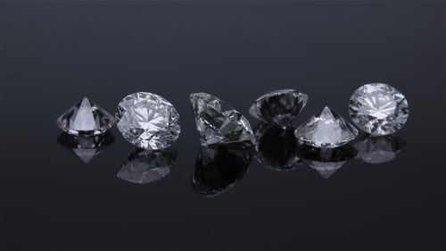
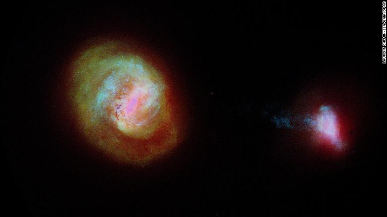

Places to visit
yellow stone national park
Visited on June 2019
Yellow Stone is filled with gushing geysers, hot springs, canyons, wildlife, waterfalls, and beautiful sceneries. It sits on top of a volcanic hot spot, and the best time to visit is in the summer. It's hot springs are very colorful and vibrant, also the geysers are amazing to watch.
Paris,france
Want to visit
I've always wanted to visit Paris because of all the architecture and art there. Also, because it's the city of fashion. I want to visit the Eiffel tower, the Louvre, and eat in a cafe there.
Athens, Greece
Want to visit
I want to go to Athens because I like greek mythology. Also, I love the architecture there. I wan to especially see the Partheon, which is a temple for the goddesss Athena.

Niagra Falls
Visited on July 2018
The Niagra Falls are very beautiful, you get very close to the falls if you take boat. You can see Canada's skyline on the other side. It looks especially beautiful if you go at night and there are colorful lights.
Song to listen to

"Excellent"
This is an amazing album which gives the message of having to love yourself before loving others. The title track 'IDOL', which shows the members embracing their identity perfectly show this message. So do the other tracks in the album, including the solo songs from the members.It became the first korean album to be certified gold in the US on November 9, 2018.
"A ballad full of emotions"
This song was released on December 2020 a few hours before Jin's birthday. Jin worked on this song during the pandemic and had anxiety.He made so he could express his feelings freely. It's a ballad type of song, and you can clearly hear the feelings in his voice.This song is very special because Jin doesn't often express his negative feelings.
"Amazing first full album."
This is album was highly anticipated, because it's Blackpink's first full album. The four year long wait was definetly worth. Every song is title track worthy. Also, each member shines equally. This album showed a more vulnerable side of Blackpink.
"Hearfelt"
This album expresses all the feelings that people would be feeling during the COVID pandemic. This is also a very personal album because all the members had some part in making it. The youngest, Jungkook even directed the music. The are also some songs that are meant to cheer you up, and some that are slower and sadder. I think that the lyrics were very well written.

"Fun summer song"
This was Blackpink's 5th single, and it wasn't like their debut ones. This single showed a different, side to Blackpink, while the other songs showed a strong, rebelious side. The song is very catchy, and I really like the asthethic of the music video.

"Amazing"
This album is the first of their seires 'Map of the Soul'. This album talks about the joy in finding love, and the uniqueness of each person. The songs are vibrant and meaningful. My favorite is Mikrokosmos, I love the lyrics of it.
"An impressive debut"
This is a good debut song, it's catchy and the choreography is amazing. The music video is also breathtaking. The girls performed the song very well.
"A good comeback"
This song's theme is self love, it's very catchy.Of course, since Itzy are all amazing dancers the dancing is on point. Also, "Not shy, not me. Itzzaayy" is iconic. But, I do wish that Itzy would try a different concept instead of the love yourself/teen crush one.
Science and space news
-
if there was ever life on mars it was most likey underground
A study published Wednesday, December 2nd, 2020 in the journal Science Advances says that the most habitable part of Mars was most likey it's subsurface. Many scientists believe that Mars was once warm and wet, instead of cold and dry like it is today. But, some others scientists argue that the sun would have been much fainter, so the temperature of Mars wouldn't be above the melting point.
-
Scientist made diamonds at room temperature
Diamonds are made over a span of a few billion years when carbon is crushed and heated.Yet, some scientists in Australia claim that they can make them in just few minutes at roome temperature.The scientists say they did this by using pressure equal to 640 African elephants balancing on the tip of a ballet shoe.
-
A rare blue ring nebula was created by a star merger
Astronomers were surprised when they discovered what appeared to be a star surrounded by an ultraviolet ring 16 years ago. It became known as the Blue Ring Nebula, located 6,300 light-years away from Earth in the Hercules constellation.Now after years of detective work, observations from ground and space-based telescopes helped the researchers determine that the ring was created when two stars merged thousands of years ago.
George RR Martin
A reader lives a thousand lives before he dies. A man who never reads lives only one.
.jpg)
One Of Us Is Lying
One Of Us Is Lying
This is mystery novel set in a highschool. One day 5 students go to detetion, but only four of them walk out alive. The one who died, had threantened to post things no one else knew about the four other people. Since the police say that the death wasn't an accident, the four become suspects. They have to go to a "club" at school during spring break, so they can figure out who the killer is.
Keeper of the Lost Cities
Contacts
Chitra Gangadhara
.jpg)
The Lunar Chronicles
The Lunar Chronicles
The books in this series are all based off of traditional fairytails.This series is about how four girls from different parts of the Earth or from the moon(or Luna in the book) came toghether to dethrone the unjust and Lunar Queen, and to have the true queen rule Luna. The first book is based off of Cinderella, and the main character is Cinder. She lives in a country similiar to east asia. She is the true, queen and the Lunar queen is her aunt. She is also a cyborg. The second book is based off of Little Red Riding Hood, and the main character is Scarlett. She lives on a small farm in France, and her grandmother was kidnapped because she helped in bringing Cinder to Earth. The third book is based off of Rapunzel, and the main character is Cress. She has lived all her life in a satellite orbiting Earth, and she hacks in to Earthen programs so, Luna can know what is going on at Earth at all times. The last book, is based off of Snow White, and the main character is Winter. Her step-mother is the Lunar Queen, and her step-mother is jealous that everyone talks about how pretty Winter is.